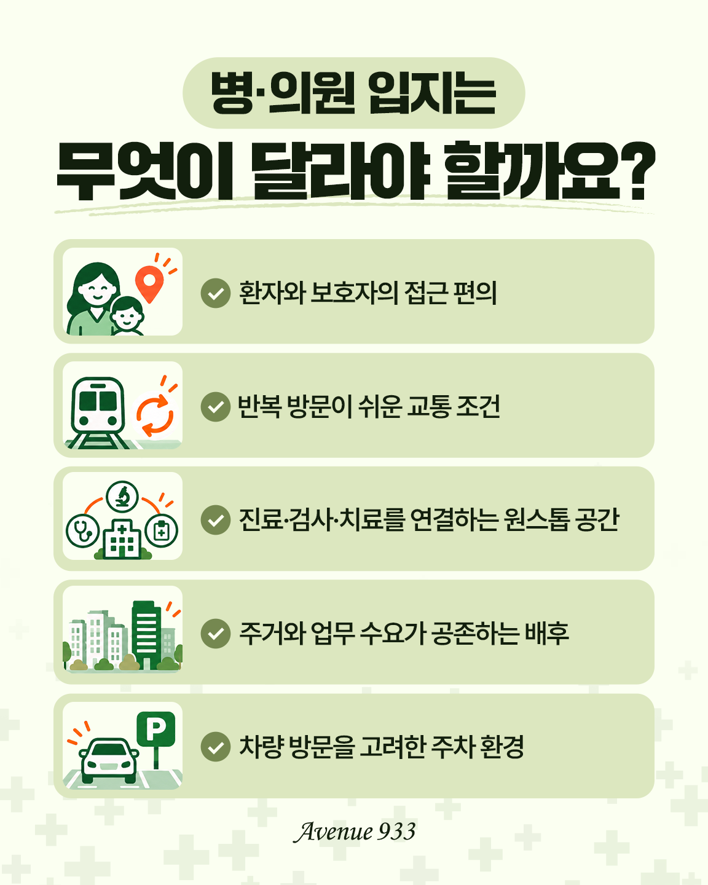
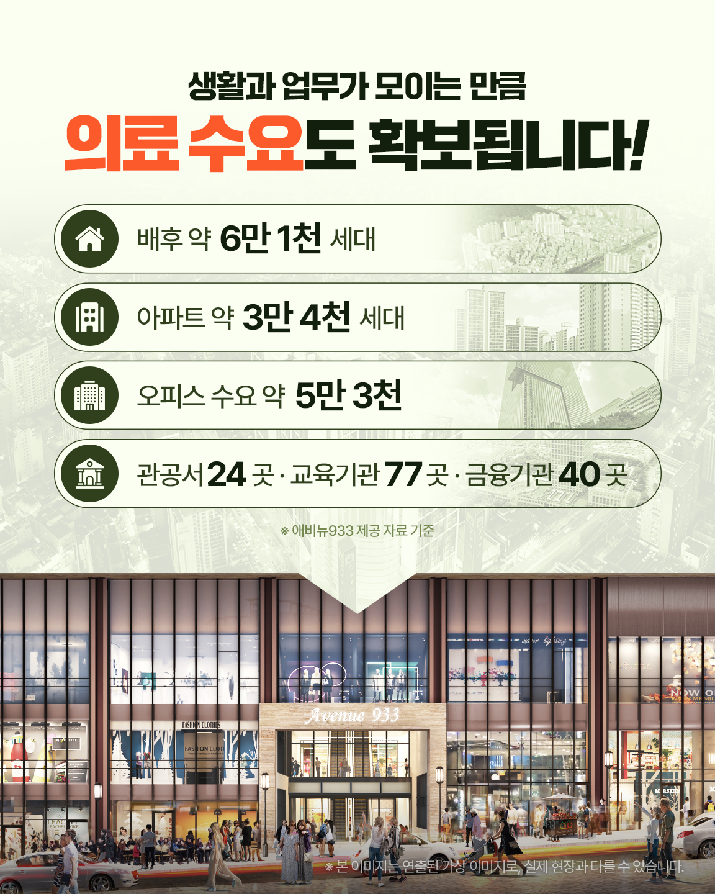

MEDICAL CHECK POINT
병·의원 입지는
무엇이 달라야 할까요?
✓
환자와 보호자의 접근 편의
✓
반복 방문이 쉬운 교통 조건
✓
진료·검사·치료를 연결하는 공간
✓
주거·업무가 공존하는 배후
✓
차량 방문을 고려한 주차 환경

DIRECT CONNECTION
양정역에서
진료 공간까지 이어지는 흐름


몸이 불편한 날, 유모차를 끌고 오는 보호자, 보행이 불편한 고령층에게는 ‘몇 분 거리’보다 실제 이동 과정이 중요합니다. 외부 도로 우회가 적고 다시 방문하기 쉬운 접근 구조를 메디컬 입지의 핵심 기준으로 보여줍니다.
LIVING CATCHMENT
생활권 안에서 반복되는
의료 수요를 봅니다


배후 약 6만1천 세대*아파트 약 3만4천 세대*오피스 수요 약 5만3천*관공서·교육·금융기관*
* 애비뉴933 제공 자료 기준. 실제 수요 해석과 최신 수치는 상담 및 별도 검토가 필요합니다.

ONE FLOOR MEDICAL PLAN
여러 호실이 아니라
하나의 의료 공간으로
1층 101호부터 116호까지를 통합적인 운영 관점에서 검토할 수 있다는 점을 강조합니다. 접수와 대기, 진료, 검사, 처치, 상담, 재활, 의료진 공간을 병원의 규모와 운영 방식에 맞춰 계획할 수 있습니다.
접수·대기진료검사·처치상담재활·치료의료진 공간
RECOMMENDED MEDICAL
메디컬 특화존
추천 진료과
생활 외래
내과 · 소아청소년과 · 이비인후과
치료·재활
정형외과 · 재활의학과 · 한의원
전문 진료
피부과 · 치과 등
※ 추천 업종은 공간 활용 예시이며 실제 입점 현황, 독점권 또는 의료기관 개설 가능성을 의미하지 않습니다.
OPENING SUPPORT
개원 준비부터
초기 홍보까지
제공 자료에서는 의료시설 분양 및 입점 원장님을 대상으로 개원 초기 6개월간 마케팅 지원 특전을 안내하고 있습니다.
01개원 컨설팅·전략 자문
02언론 연계 홍보 지원
03블로그·SNS 홍보 지원
04홍보물 제작 지원
※ 세부 지원 범위와 제공 조건은 계약·상담 내용에 따라 달라질 수 있습니다.